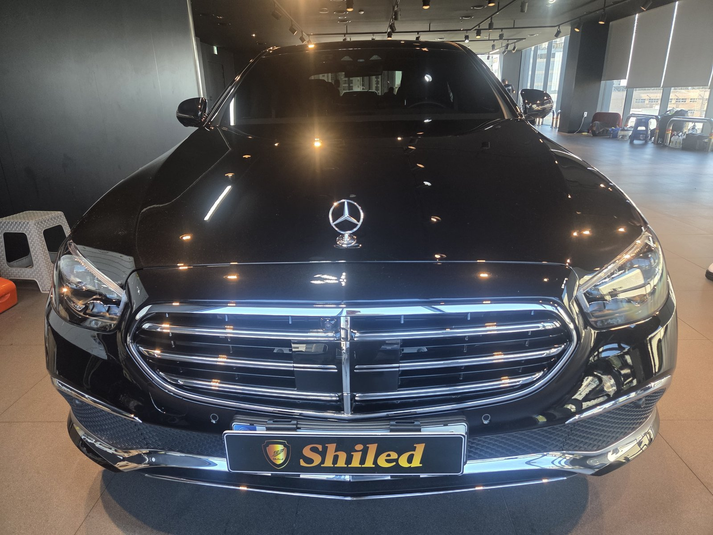
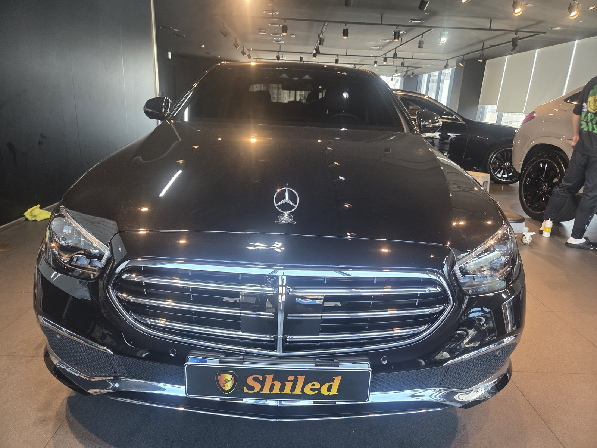
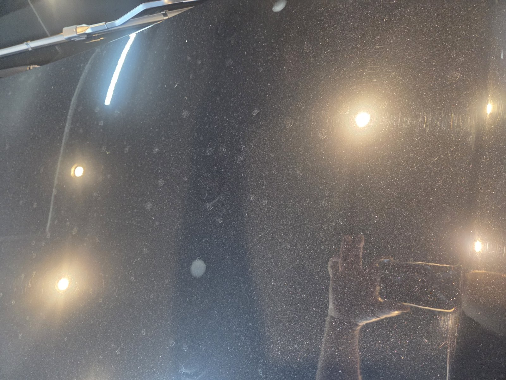
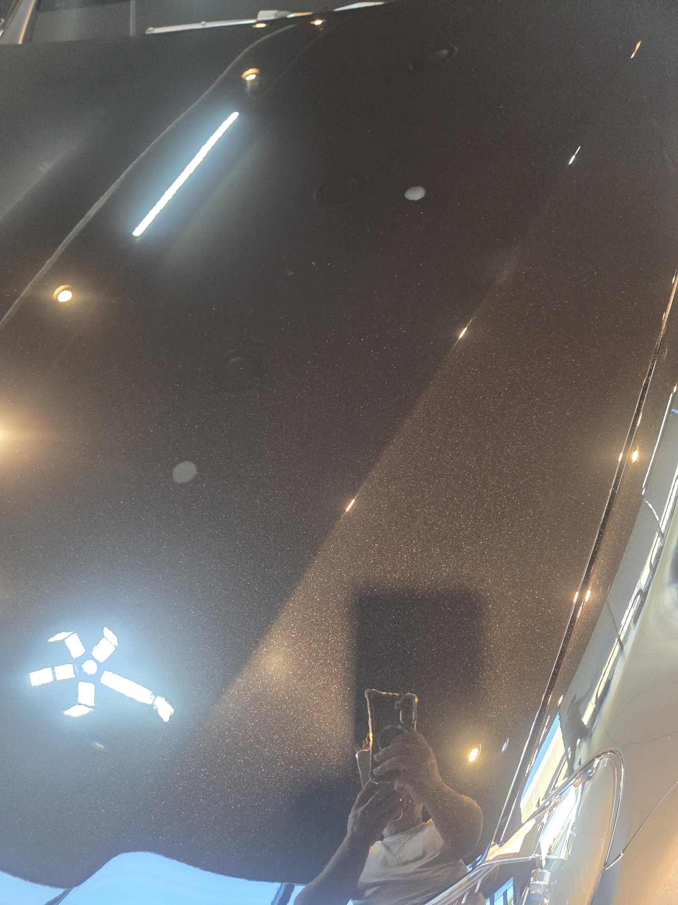
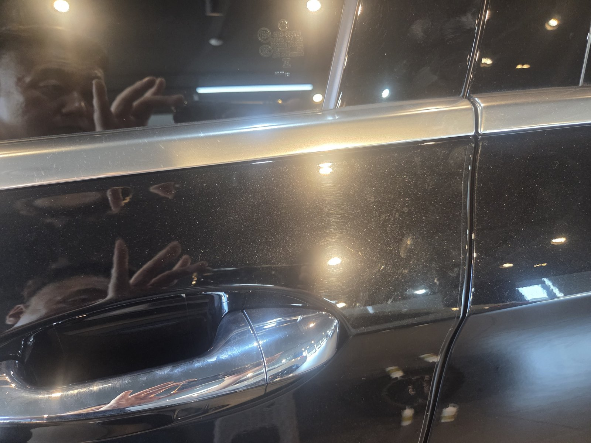
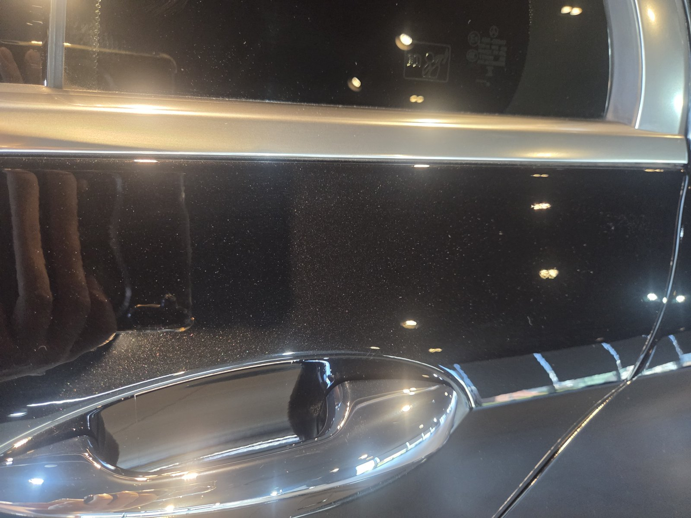
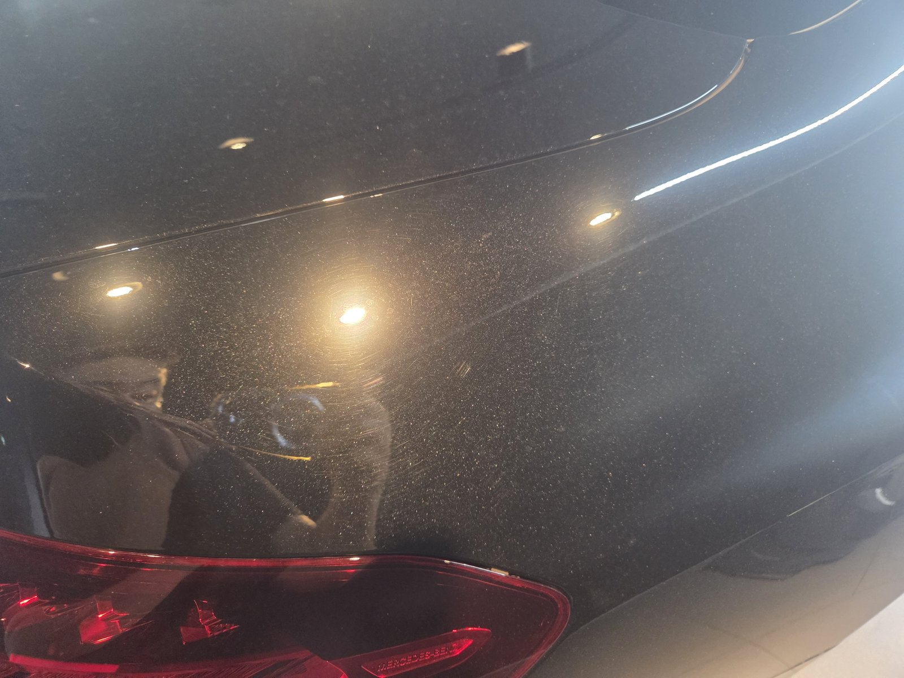
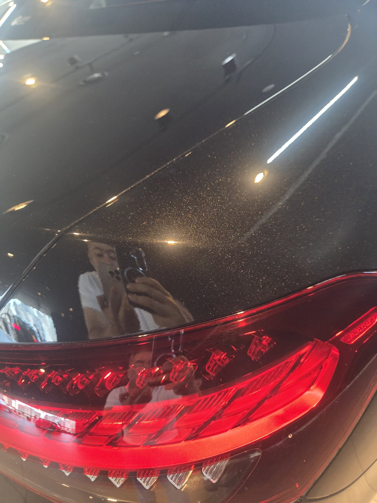
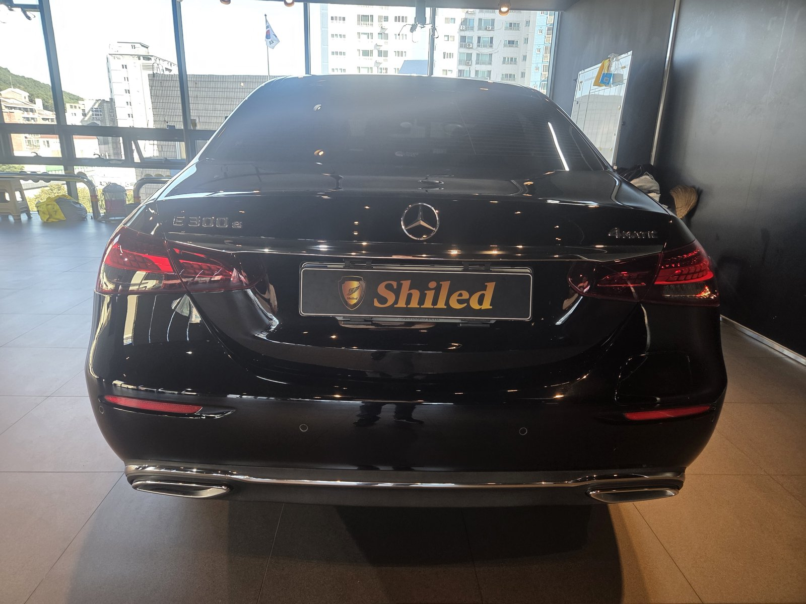

벤츠 E300e 검정입니다.
10월 6일 입고해 다음 날 마무리한 차입니다.
부산 광택 작업으로 본넷 스월을 지운 기록입니다.

본넷 스월, 왜 원형으로 생기나요?
세차할 때 손이 원을 그리기 때문입니다.
타월이나 스펀지를 돌려가며 닦으면 그 궤적이 그대로 남습니다.
조명을 대면 동그란 무늬가 겹겹이 보입니다.
이 차의 본넷이 딱 그 상태였습니다.



본넷 — 조명 주변을 감싸던 원형 스월이 사라졌습니다
부산 광택, E300e는 어떻게 진행했나요?
① 세차와 철분 제거로 표면을 먼저 비우고,
② 조명으로 스월 깊이를 부위별로 확인한 뒤,
③ 컴파운드에서 폴리싱 단계로 넘어가며 마감했습니다.
도어 손잡이 주변은 손톱 자국이 몰리는 자리라 따로 신경 썼습니다.


도어 손잡이 주변 — 반사된 풍경의 윤곽이 또렷해졌습니다
기술자의 팁
세차할 때는 원을 그리지 말고 한 방향으로 직선으로 닦아 주십시오. 같은 잔기스가 생겨도 직선 자국은 원형 스월보다 훨씬 덜 보입니다.


뒷펜더 — 테일램프 위 곡면까지 고르게 정리했습니다
광택 후 무엇이 달라졌나요?
조명이 번지지 않고 점으로 맺힙니다.
검정의 깊이가 다시 살아났습니다.
진짜 기술자가 작정하고 덤비면 이 정도는 돌아옵니다.
이번 부산 광택의 결과입니다.

자주 묻는 질문
Q. 원형 스월은 광택으로 다 지워지나요?
A. 대부분 클리어층 표면의 얕은 자국이라 광택으로 정리됩니다. 다만 클리어층을 뚫은 깊은 스크래치는 광택만으로 완전히 사라지지 않을 수 있어 작업 전에 직접 확인해 드립니다.
Q. 스월이 다시 생기지 않게 하려면 어떻게 하나요?
A. 세차는 직선 방향으로, 물기는 문지르지 말고 눌러서 흡수시키는 것이 기본입니다. 자동세차 브러시는 피하시는 것이 좋습니다.
Q. 광택은 하루면 끝나나요?
A. 차 상태에 따라 다릅니다. 이 차는 10월 6일 입고해 7일에 마무리했습니다.
Q. 광택은 얼마나 자주 받아야 하나요?
A. 정해진 주기는 없습니다. 세차 습관과 보관 환경에 따라 잔기스가 쌓이는 속도가 다르기 때문입니다. 강한 조명 아래서 도장면을 봤을 때 자국이 눈에 띈다면 그때가 적기입니다.
Q. 쉴드광택 위치와 예약은 어떻게 하나요?
A. 부산 남구 유엔로220 1F 쉴드광택입니다. 예약·상담은 010-3384-1850, 대표 최한중이 직접 상담하고 책임 시공합니다.
본넷 스월, 어디까지 지워지는지 직접 보여드립니다.
제품을 직접 만드는 사람이 직접 시공합니다.
부산에서 광택을 고민 중이시면 편하게 연락 주십시오.
어떤 차를 타냐보다 어떻게 타냐가 중요합니다~!
시공 중에는 전화를 받지 못할 때가 많습니다.
카카오톡으로 차종과 원하시는 시공을 남겨주시면 확인 후 답변드립니다.
쉴드광택 · 부산 남구 유엔로220 1F · 대표 최한중